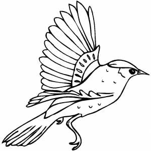

Для добавления изображения на веб-страницу используется тег <img>, атрибут src которого определяет адрес графического файла. Типы изображений могут быть jpg, gif и png.

Альтернативный текст позволяет получить текстовую информацию о рисунке
при отключенном в браузере показе картинок или во время их загрузки.
Для создания альтернативного текста используется атрибут alt тега <img>
Не все браузеры отображают альтернативный текст в виде всплывающей подсказки. Поэтому для ее создания используйте атрибут title
Для изменения размеров рисунка средствами HTML у тега <img> предусмотрены атрибуты width (ширина) и height (высота). В качестве значения используются пикселы. Ширину и высоту изображения можно менять как в меньшую, так и большую сторону. Однако на скорость загрузки рисунка это никак не влияет, поскольку размер файла остается неизменным.
Дополнительные атрибуты:
Задание: Разместить картинку слева, но чтобы текст обтекал справа. Сделать отступ в 15px от картинки